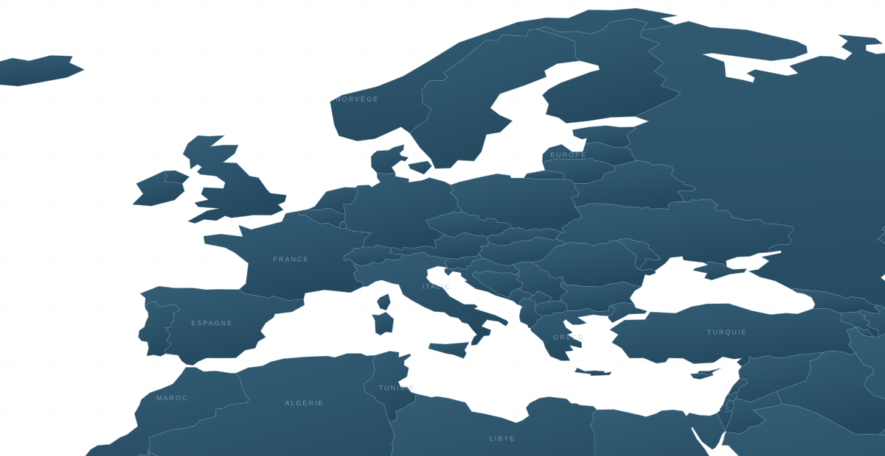

Pourquoi bien localiser ?
Les conséquences d’une localisation imprécise, expliquées en images.
Télécharger le PDF : Pourquoi bien localiser ?LES MÉTIERS DE L’ASSISTANCE
Partir du général
pour aller vers le particulier.
VOTRE TERRAIN D’EXPLORATION

MER MÉDITERRANÉEOCÉANLes essentiels à garder près de soi.
Les conséquences d’une localisation imprécise, expliquées en images.
Télécharger le PDF : Pourquoi bien localiser ?Quatre étapes, des questions concrètes et des cartes réelles pour guider le dialogue.
Télécharger le PDF : La méthode de localisation en entonnoir